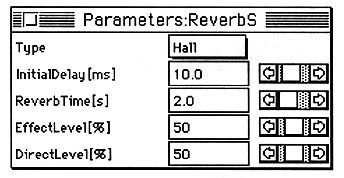

-
Double-click the ID of the module to be reassigned.
The “Renumber” dialog box appears.
-
Enter the value to be changed and click “OK”.
The module ID is changed.
If the changed IDs are duplicated or discontinuous, the IDs of other modules are automatically adjusted so that the IDs are continuous.
-
Parameter editing
-
-
Double-click the module selection field.
The parameter edit window is displayed.

-
Change the value by moving the scroll bar with the mouse or clicking in the value display frame and entering the value directly.